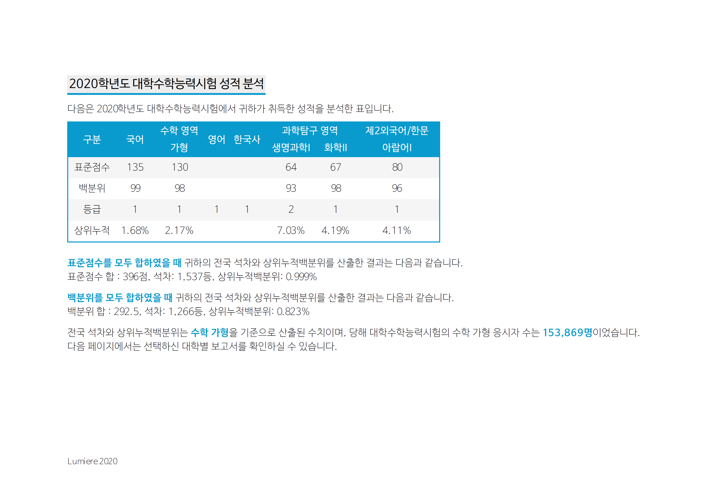
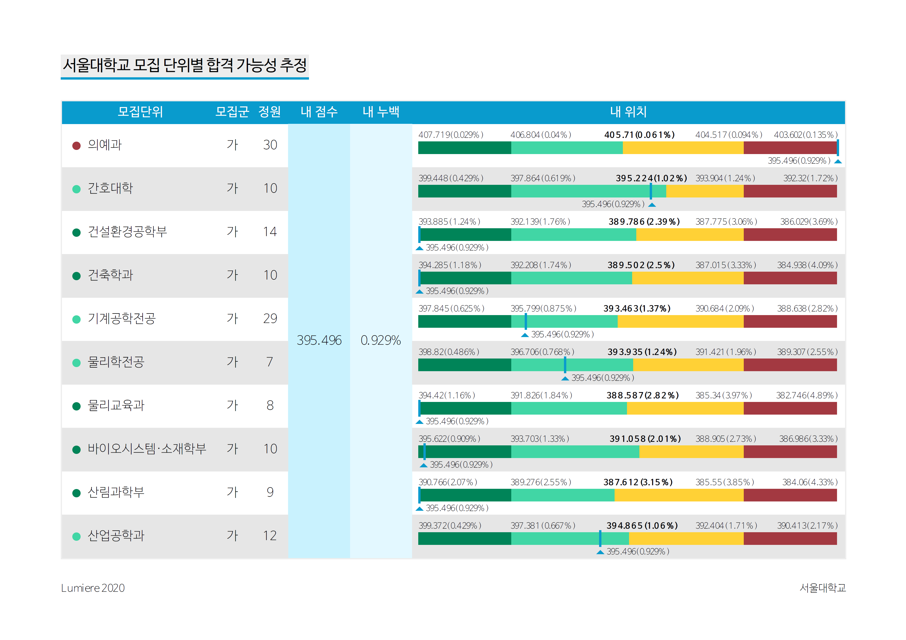
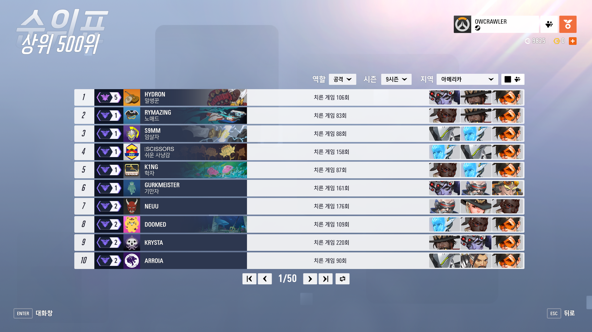
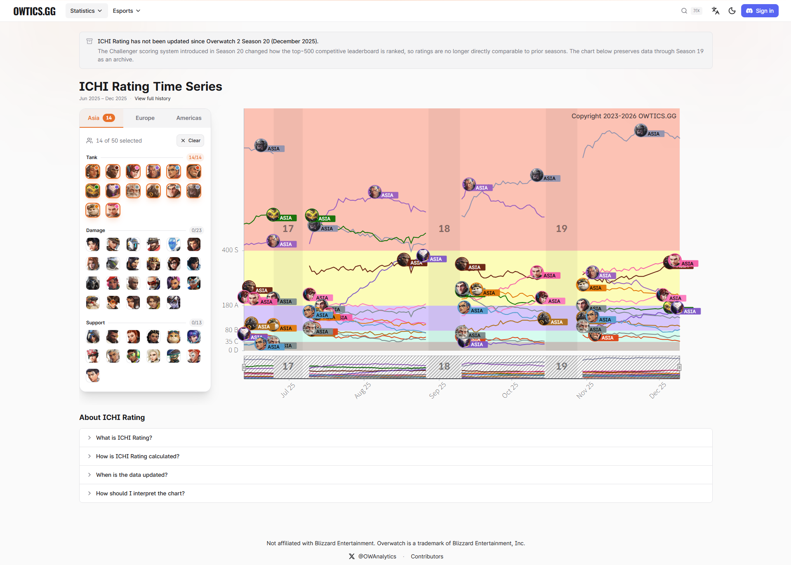
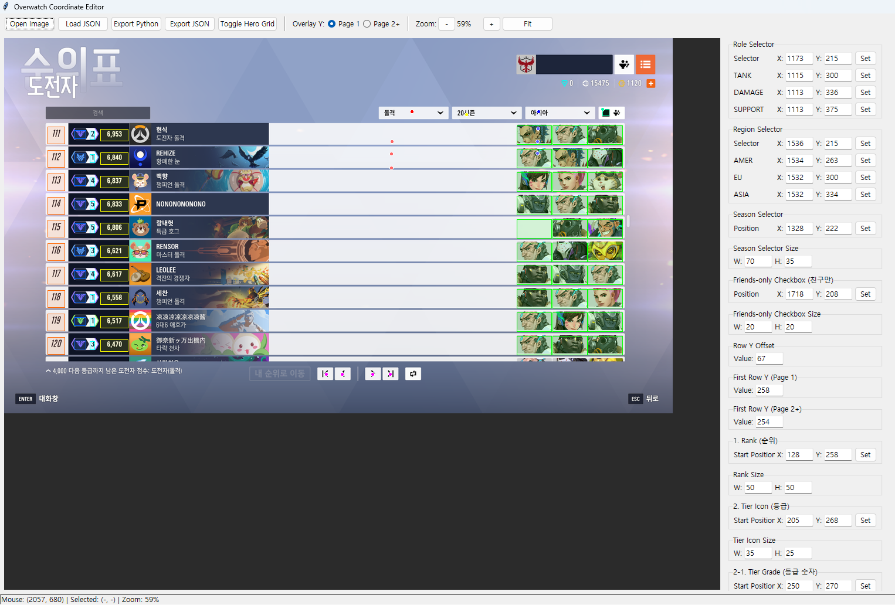
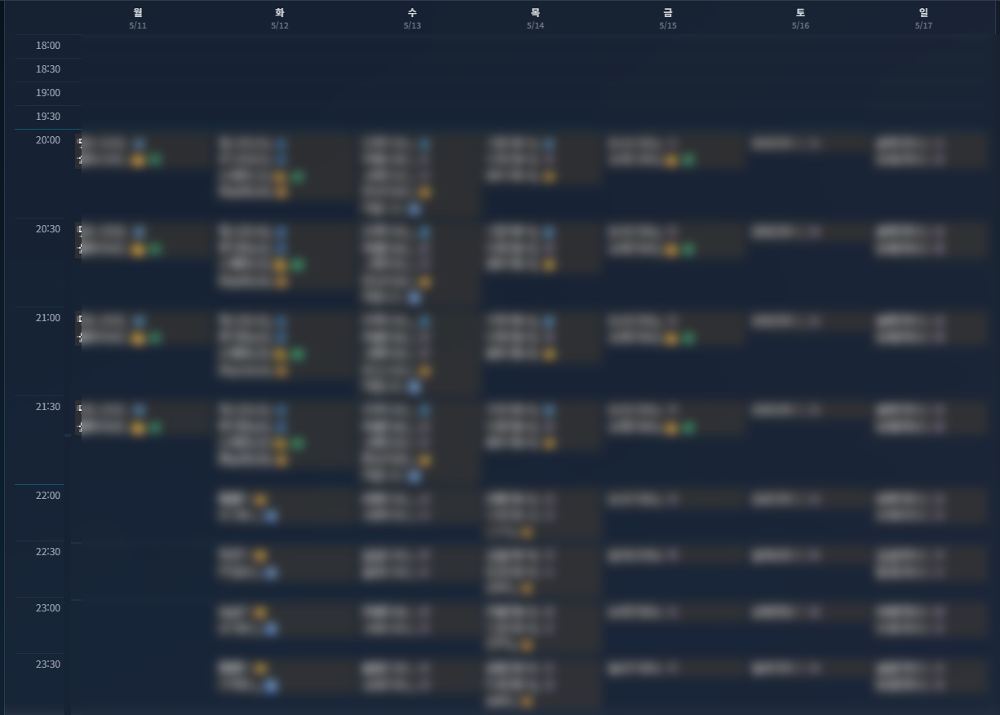
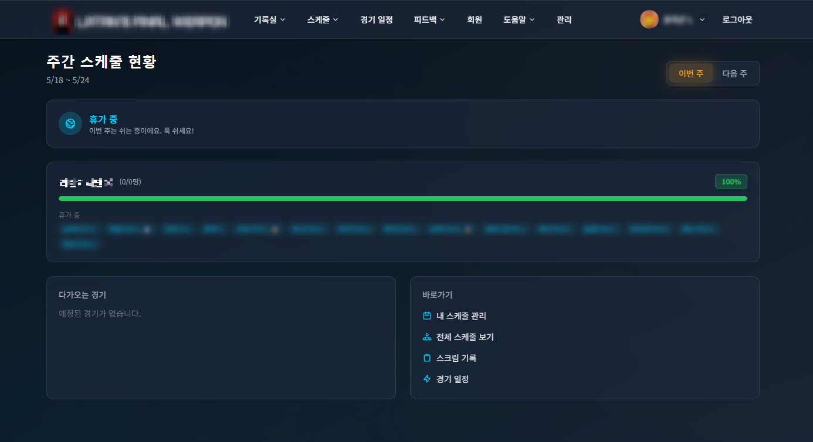
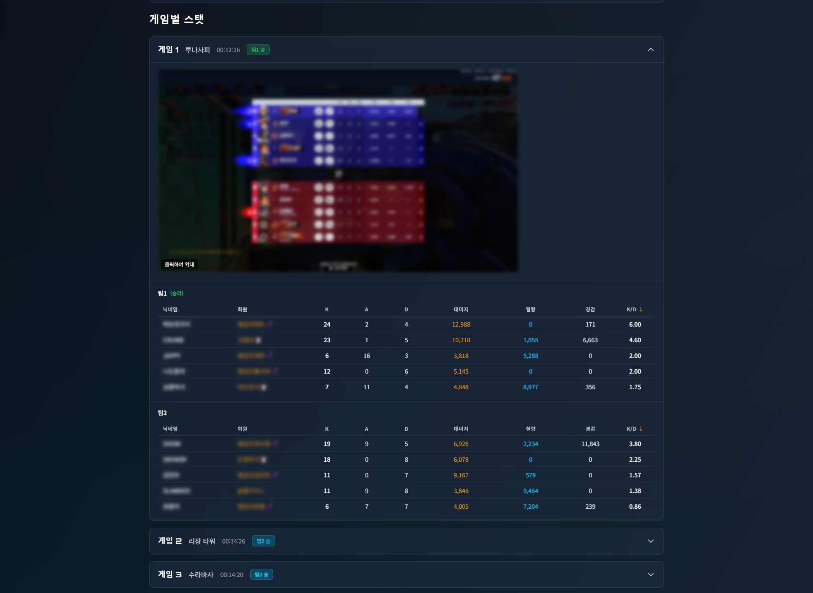
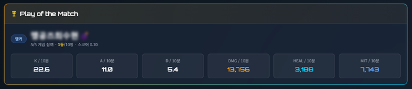

#1 - Cover
SHIN INSIK · 신인식
10만 수험생을 도운 입시 서비스부터, 27개월 동안 매일 돌아간 자동화 파이프라인까지.
#2 - Project Index
#3 - Lumiere
2017-2020
수능 점수를 입력하면 성적 및 합격 가능성 분석 보고서를 받아볼 수 있는 서비스
비서울권 수험생은 정시 의사결정을 종이 배치표와 유료 컨설팅에 의존해야 했습니다. 친구들이 표준점수 합산만 보고 정시 지원을 결정하는 모습에서 시작했습니다.
엑셀 파일 형태로 공개된 '고속성장 분석기'를 가공하여 상위 누적 백분위와 합격선 데이터를 구조화하고, 수백 개의 학교별 환산 공식을 모듈로 분리해 매년 입시 규칙 변경에 대응했습니다.
※ 고속성장 분석기를 만드는 코스모스핌 님에게 사용 허가를 득했습니다.
누구나 자신의 수능 점수로 합격 가능성을 30초 안에 판단할 수 있게 했습니다.
3년 동안 10만 명의 학생이 방문하여 15만 장의 보고서를 발행했습니다. 지역과 소득에 무관하게 제공하여 정보 격차를 해소했습니다.
#4 - Lumiere · Problem · Before/After
누구나 수능 점수로 합격 가능성을 판단할 수 있습니다. 컨설팅 비용, 긴 대기 시간, 지역별 정보 격차를 줄이는 쪽에 기획 의도를 두었습니다.
#5 - Lumiere · Product · Product Surface
표준점수, 백분위, 등급과 학교별 환산공식을 결합했습니다. 학생은 첫 화면에서 전국 위치와 지원 가능성을 함께 확인합니다.

표준점수, 백분위, 등급, 상위누적을 한 행에 묶어 정량 판단 기준을 제공합니다.
표준점수 합과 백분위 합을 기준으로 전국 석차와 상위누적백분위를 계산합니다.
수학 가/나형 응시자 표본을 기준으로, 학생이 자신의 계열에서 위치를 정확하게 가늠하게 했습니다.
#6 - Lumiere · Takeaway · Product Surface
표준점수, 환산점수, 모집단위 위치, 4단계 가능성을 한 보고서에 묶었습니다.

학교 단위가 아니라 모집단위, 모집군, 정원 단위로 추정합니다. 가군, 나군, 다군을 분리해 처리했습니다.
환산점수와 상위누적백분위를 함께 표기합니다. 한 지표만으로 판단하기 어려운 경계 케이스를 줄였습니다.
최초합, 추가합, 불합격, 경계를 한 줄 막대로 표시합니다. 긴 표를 읽지 않아도 결정을 내릴 수 있게 했습니다.
#7 - Lumiere · Architecture · System Diagram
Zappa로 패키징한 Flask 앱이 학교별 환산 모듈과 wkhtmltopdf를 호출합니다. 요청 폭증과 휴면 기간 비용을 모두 고려한 serverless 구조입니다.
#8 - Lumiere · Scale · Metric Proof
2017년부터 2020년까지 3개 정시 시즌 동안 운영했습니다. 정시 모집 기간 동안 피크가 반복되는 워크로드에서 유저 100,000+명과 PDF 150,000+건을 처리했습니다.
#9 - Overwatch Leaderboard Crawler
2023-2026
공식 API가 없는 영웅 성능 데이터를 매일 수집하는 27개월 무중단 파이프라인.
오버워치는 공식 통계 API가 없어 OP.GG 같은 메타 분석 서비스가 존재하지 않았습니다. 유저들은 현재 주력 메타를 객관적 수치로 확인할 방법이 없었습니다.
유일한 공개 데이터인 TOP 500 순위표를 매일 EC2에서 자동 캡처하고, 여러 가지 CV 방법론으로 5개 필드(rank·tier·name·count·heroes)로 분해해 구조화했습니다.
매일 갱신되는 영웅 선호도 지수가 owtics.gg에 라이브로 노출되고, 유튜버 '아이치'의 영상 소재로 활용되어 영상당 수만 회의 조회수를 기록했습니다.
27개월 동안 무중단으로 운영하며 매일 450장 이상의 PNG 이미지와 4,500명 이상의 플레이어 데이터를 분석했습니다. owtics.gg와 아이치 채널 두 외부 파트너에 안정적으로 데이터를 공급했습니다.
#10 - Overwatch Leaderboard Crawler · Problem · Product Surface
Blizzard는 2025년까지 영웅 통계 API를 제공하지 않았습니다. 유일한 데이터인 상위 500위 리더보드를 데이터 원천으로 삼았습니다.

공식 API가 없어서 화면 캡처가 유일한 방법이었습니다. 클라이언트 조작을 자동화하여 리더보드에 접근했습니다.
3개 지역, 3개 역할을 매일 같은 시각에 수집합니다. 하루 약 450장의 PNG 이미지와 약 4,500명 유저의 데이터가 수집됩니다.
Rank, tier, name, count, heroes를 인식합니다. 각 필드마다 적합한 방법론이 달랐습니다.
#11 - Overwatch Leaderboard Crawler · CV Pipeline · Pipeline Frame
리더보드의 한 행을 5개 필드로 나누고, 각 필드에 맞는 인식 방식을 적용했습니다.
#12 - Overwatch Leaderboard Crawler · Data Path · System Diagram
EC2는 화면 캡처에 집중하고, Lambda는 분석과 데이터 리포트를 처리하며, S3는 원본 이미지를 보관합니다.
#13 - Overwatch Leaderboard Crawler · Public Surface · Product Surface
owtics.gg 개발팀과 협업하여 ICHI Rating을 제공했습니다. API contract를 정의하여 데이터를 리포트하고, 메타 변화를 시계열로 제공합니다.

탱, 딜, 힐 그룹별 영웅 레이팅 추이를 보여줍니다. 시즌 메타 변화를 한 줄 차트로 읽게 했습니다.
캡처된 이미지에서 인식된 데이터를 API contract에 맞게 가공하여 공급했습니다.
Blizzard 공식 통계 API 없이도 owtics.gg가 매일 새로운 메타 데이터를 시각화할 수 있게 했습니다.
#14 - Overwatch Leaderboard Crawler · Reliability · Product Surface
시즌 패치마다 인식 좌표가 바뀝니다. 코드 수정 대신 직접 만든 GUI 에디터로 영역을 다시 잡아, 27개월 동안 무중단으로 운영했습니다.

leaderboard 화면 위에 인식 영역의 좌표·크기를 직접 지정하고 미리보기로 확인합니다. 역할·지역·시즌 별 설정을 분리해 저장합니다.
UI가 바뀌어도 GUI에서 좌표를 다시 잡고 JSON으로 export하면 끝입니다. 인식 파이프라인 코드는 그대로 유지합니다.
UI 변경 대응 시간이 분 단위로 줄어 27개월 동안 패치에 무중단으로 대응했습니다.
#15 - Overwatch Leaderboard Crawler · Takeaway · Metric Proof
중요한 역량은 한 번 만든 스크립트가 아니라 지속적으로 운영하는 노하우입니다.
#16 - Scrim Manager
2025 - 운영 중
외부 팀과의 스크림 경기와 내전 경기를 한 도구로 묶은 풀스택 운영 도구.
스크림 팀 운영진은 모든 팀원의 스케줄을 DM으로 수합하고, 경기가 잡힐 때마다 일일이 공지하고, 스케줄 미제출 팀원을 직접 재촉해야 했습니다. 팀원들은 본인의 활동 기록을 되짚어볼 채널이 없었습니다.
스케줄 수합부터 리마인드까지 전 워크플로우를 디스코드 봇 + 웹으로 구현하고, OCR로 결과 스크린샷에서 통계를 자동 추출합니다.
운영진의 반복 작업이 사라졌고, 팀원들은 자신의 실력 변화를 숫자로 체감하며 POTM 선정으로 성취감을 얻습니다.
디스코드 서버 100여 명의 구성원 중 매주 평균 53명, 매달 평균 71명이 사용하여 53%의 정착률을 기록했습니다. 매주 외부 팀과의 스크림과 내전 운영을 지원하고 있습니다.
#17 - Scrim Manager · Problem · Before/After
가능한 일정을 수집하고, 경기 일정을 공유하는 워크플로우가 수동 디스코드 DM에 의존했습니다. 웹 페이지와 봇 알림으로 운영진들의 수고를 줄였습니다.

멤버별로 가능한 시간을 매번 수동 DM으로 확인해야 했습니다. 운영진이 실수할 여지도 있었습니다.
요일과 시간대별로 누가 가능한지 한 화면에 표시합니다. 색상과 아이콘으로 역할 정보까지 같이 보입니다.
DM으로 가능한 시간을 작성하는 대신, 드래그 몇 번이면 가능한 시간을 제출할 수 있습니다.
#18 - Scrim Manager · Web App · Product Surface
주간 스케줄, 팀 라인업 진행률, 다가오는 외부·내전 경기, 빠른 작업을 한 화면에 배치했습니다.

이번 주와 다음 주의 휴가 및 스케줄 등록 상태를 한 줄로 확인합니다.
팀별 가용성 입력 완료율을 표시합니다. 누가 아직 입력하지 않았는지 바로 확인합니다.
예정된 외부 스크림과 내전, 내 스케줄, 전체 스케줄, 스크림 기록으로 바로 이동합니다.
#19 - Scrim Manager · Notifications · Pipeline Frame
스케줄 등록 요청부터 경기 생성, 수정, 취소, 참여 변경까지, 봇이 능동적으로 멤버에게 알립니다. 모든 DM에 1-click 웹 링크 버튼을 포함했습니다.
#20 - Scrim Manager · Vision OCR · Product Surface
인게임 스코어보드를 Qwen3-VL으로 인식하여 구조화했습니다.

5v5 매치 종료 화면을 업로드합니다.
닉네임 및 통계를 읽습니다. 높은 성능으로 안정적인 인식률을 보여줍니다.
영웅, K/D/A, 대미지, 치유, 경감을 인식하여 구조화합니다. SQLite에 저장해 다음 단계의 POTM 선정과 통계 UI를 렌더링합니다.
#21 - Scrim Manager · POTM · Product Surface
OCR로 들어온 스탯을 역할별 가중합으로 변환하고, 참여율 필터를 적용한 뒤 1위 플레이어를 선정합니다.

탱커(킬·데스·대미지·경감) / 딜러(대미지·킬·데스·어시스트) / 힐러(치유·데스·대미지·어시스트·킬). Min-max 정규화 후 가중합으로 POTM 점수를 계산합니다.
표본이 적어 과대평가될 수 있는 플레이어는 제외합니다.
#22 - Scrim Manager · Adoption · Metric Proof
디스코드 스크림 팀 회원은 100명 이상이고, 그 중 매주 스크림에 참여하는 회원은 53명입니다.
#23 - Scrim Manager · Operations · System Diagram
서비스 분리보다 배포 단순성, 비용, 개발 공수, 장애 지점 축소가 중요했습니다.
#24 - Closing · Metric Proof
세 프로젝트는 서로 다른 도메인이지만 같은 역량을 증명합니다. 데이터를 구조화하고, 비용과 안정성을 고려해 연 단위로 운영할 수 있습니다.
SHIN INSIK · p0rygon.github.io · 2026.05 contact: gms04246@gmail.com